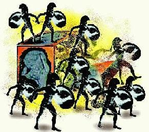

TITAN Artwork
Courtesy of the good folks at Sys Admin Magazine and Twyla Watson Bogaard
who created this image.
TITAN MAP
The Old World planisphere was created by Great Dutch iconographer Henri Hondius in 1630.